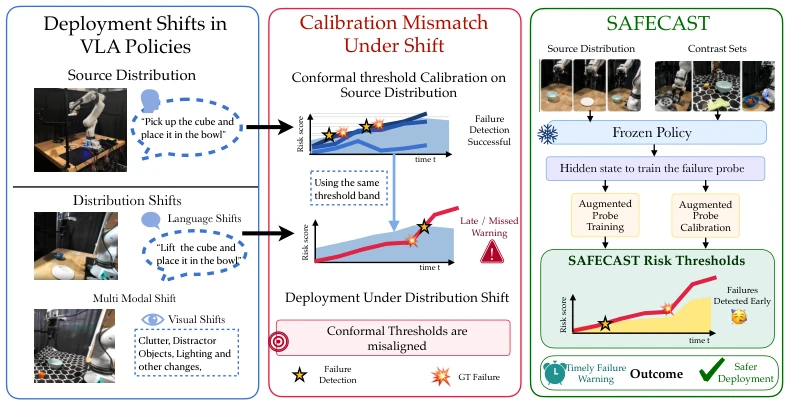
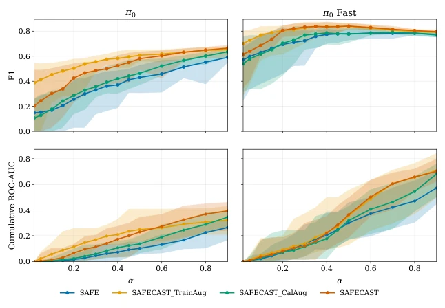
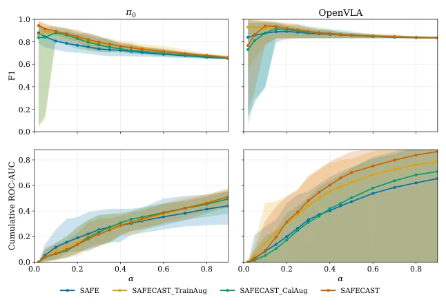
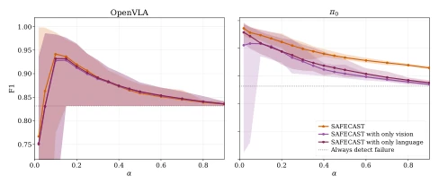
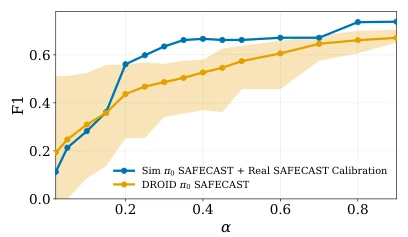
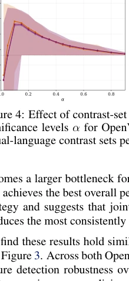
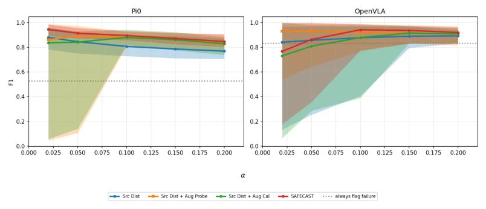
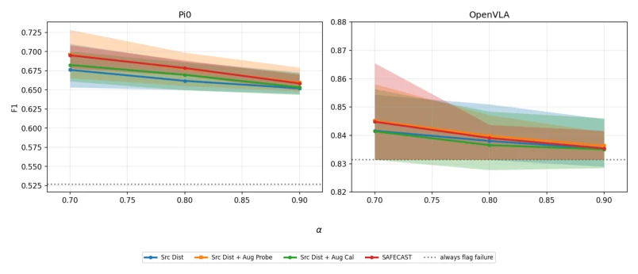
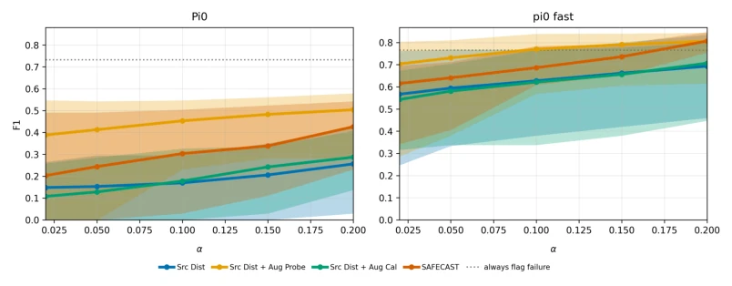
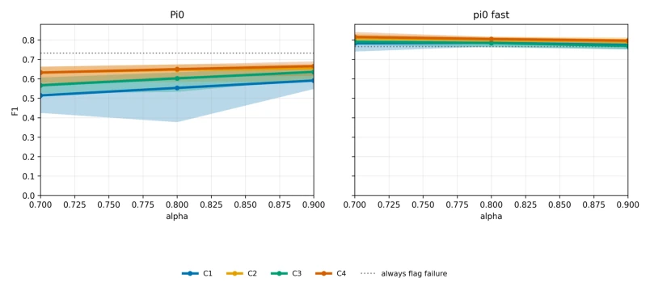

SAFECAST applies a band-aid to VLA's 'maladaptation'; although it does not fundamentally cure poor generalization, it makes the fault detector much more robust by relying on 'finding faults' (contrast sets). This approach is indeed effective in both simulation and on real robots, with F1 and ROC-AUC both increasing. However, the cost is having to run a large amount of extra perturbation data, raising the question of whether this counts as 'trading data for safety'? Furthermore, it does not restore formal exchangeability guarantees, so it may still fail when encountering unseen perturbations. Nevertheless, in safety-critical scenarios, this 'superfluous' calibration is indeed superior to blindly trusting the model; at least it can provide early warnings, which is better than fighting fires after the fact.
VLA models such as OpenVLA [1] and π0 [2] are powerful, but they collapse when encountering lighting changes, clutter, or instruction rephrasing during deployment. Existing SAFE [3] relies on hidden states and conformal prediction, but assumes calibration data is consistent with deployment, which is often violated in practice. When distribution shift occurs, thresholds calibrated based on the source distribution fail, leading to missed detections or false alarms. We need a fault detection mechanism that can perceive distribution shifts, ensuring reliable warnings under visual, language, or multimodal perturbations to prevent robots from performing harmful actions.
SAFECAST is based on the SAFE framework, with the core being the introduction of Contrast Sets to enhance training and calibration. The process is as follows: First, extract VLA hidden states from the source distribution; next, construct contrast sets by applying controlled perturbations to vision (adding clutter, new objects) and language (rewriting instructions), and re-execute the frozen policy to generate new trajectories; then, mix these perturbed trajectories with source data for probe training and conformal calibration. The probe predicts risk scores, while conformal prediction calculates time-varying thresholds. The key lies in that contrast sets simulate distribution shifts during deployment, making the calibration distribution closer to real-world scenarios. Additionally, DTW is used to filter near-duplicate trajectories to ensure data diversity. Specifically, visual perturbations include interfering objects in LIBERO and cluttered backgrounds in DROID; language perturbations are generated via ChatGPT to produce semantically equivalent instructions. This enhancement ensures the probe has encountered 'bad cases' during the training phase and covers more risk distributions during the calibration phase, thereby becoming more robust during deployment.

Figure 1: SAFECAST. Left: VLA policies trained on source-distribution rollouts can encounter visual, language, and multimodal deployment shifts during execution. Middle: Hidden-state failure detectors calibrated only on source-distribution trajectories can become misaligned under deploy- ment mismatch, leading to delayed or missed failure warnings. Right: SAFECAST intervenes at probe training and conformal calibration time with contrast-set trajectories generated from perturbed in-distribution conditions, producing more reliable time-varying risk thresholds during deployment.
Tested on LIBERO simulation and DROID real robots, comparing π0, π0-FAST, and OpenVLA. Metrics used are F1 and ROC-AUC. Results show SAFECAST significantly outperforms SAFE, with combined visual + language perturbations yielding the best effect. The Sim-to-Real strategy of simulation training + real robot calibration is also effective, costing less than pure real robot training. Ablation studies indicate that single-modal perturbations are inferior to combined perturbations, and different strategies exhibit different sensitivities to training/calibration enhancements. For instance, π0 benefits from training enhancement, while π0-FAST benefits from calibration enhancement. This demonstrates the generalizability of SAFECAST across different models and scenarios, and its ability to effectively mitigate risks arising from distribution shifts.

Figure 2: Real-world failure detection across varying α on the DROID setup. Top: F1-score across calibrated intervention thresholds. Bottom: ROC-AUC measuring separation between successful and failed rollouts. Lower α values correspond to more conservative deployment regimes with stricter intervention thresholds. Across both π0 and π0-FAST, SAFECAST probes consistently im- prove failure detection performance over SAFE, with the strongest gains appearing when both aug- mented training and calibration are combined in SAFECAST. Averaged over 30 seeds.

Figure 3: Simulation failure detection across varying α on LIBERO. Top: F1 across the α values. Bottom: cumulative ROC-AUC across the α values Across both π0 and OpenVLA, contrast-set- aware probes consistently improve failure detection performance over SAFE, with SAFECAST and augmented probe training producing the strongest overall improvements.

Figure 4: Effect of contrast-set modality on simulation failure detection. Left: F1 across conformal significance levels α for OpenVLA and π0. Right: peak F1 for each contrast-set modality. Joint visual-language contrast sets perform best for both policies.

Figure 5: Sim-to-real failure detection robustness across varying α. SAFECAST enables sim-to-real transfer even under deployment mismatch.
其他图片Other Figures

Figure 4 ablates visual-only, language-only, and joint visual-language contrast sets under the best- performing SAFECAST configuration from the simulation results in Section 5.2. Across both Open- VLA and π0, jointly incorporating visual and language perturbations produces the strongest OOD failure detection robustness. For example, on OpenVLA, multimodal contrast sets improve F1 from

Figure 6: Simulation failure detection in the low-α regime, where thresholds are more permissive and fewer rollouts are flagged.

Figure 7: Simulation failure detection in the high-α regime, where thresholds are more conservative and failures are flagged more aggressively.

Figure 8: Real-world failure detection in the low-α regime, emphasizing permissive operation with fewer interventions.

Figure 9: Real-world failure detection in the high-α regime, emphasizing conservative intervention when missed failures are costly.